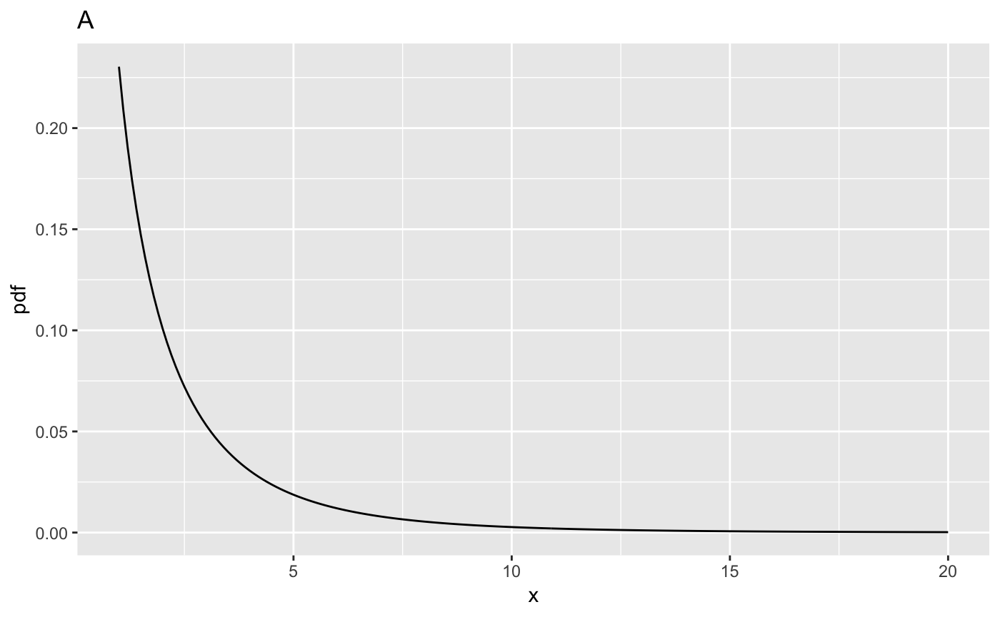

Ch11: Vignette 1: Sample Size ROC from first principles
Dev P. Chakraborty
2018-11-21
SampleSizeROC.RmdIllustrating the F-distribution
ndf <- 1;ddf <- 10;ncp <- c(0,2,5,10)
fCrit <- qf(0.95, ndf,ddf)
cat("critical value of x for rejecting NH is ", fCrit,"\n")
#> critical value of x for rejecting NH is 4.964603
x <- seq(1, 20, 0.1)
myLabel <- c("A", "B", "C", "D")
myLabelIndx <- 1
for (i in 1:length(ncp))
{
y <- df(x,ndf,ddf,ncp=ncp[i])
cat("ndf = ", ndf, ", ddf = ", ddf, ", ncp = ", ncp[i], ", prob > fCrit = ",
1-pf(fCrit, ndf, ddf, ncp = ncp[i]), "\n")
curveData <- data.frame(x = x, pdf = y)
curvePlot <- ggplot(data = curveData, mapping = aes(x = x, y = pdf)) +
geom_line() +
ggtitle(myLabel[myLabelIndx]);myLabelIndx <- myLabelIndx + 1
print(curvePlot)
}
#> ndf = 1 , ddf = 10 , ncp = 0 , prob > fCrit = 0.05
#> ndf = 1 , ddf = 10 , ncp = 2 , prob > fCrit = 0.2490518
#> ndf = 1 , ddf = 10 , ncp = 5 , prob > fCrit = 0.5238753
#> ndf = 1 , ddf = 10 , ncp = 10 , prob > fCrit = 0.8128068
Vignette 2: Sample size estimation
The Van Dyke dataset in file VanDyke.lrc, in "MRMC" format, is regarded as a pilot study. The command rocData <- DfReadDataFile(fileName, format = "MRMC") reads the data and saves it to a dataset object rocData. The next line uses the function StSignificanceTesting() to apply "DBMH" analysis using the "Wilcoxon" figure of merit. The next line extracts the needed variance components. The Y implies pseudovalue based values. The next line extracts the effect size, effectSize and prints it out.
alpha <- 0.05;cat("alpha = ", alpha, "\n")
#> alpha = 0.05
fileName <- "VanDyke.lrc"
#fileName <- "Franken1.lrc"
rocData <- DfReadDataFile(fileName, format = "MRMC")
retDbm <- StSignificanceTesting(dataset = rocData, FOM = "Wilcoxon", method = "DBMH")
varYTR <- retDbm$varComp$varComp[3];varYTC <- retDbm$varComp$varComp[4];varYEps <- retDbm$varComp$varComp[6]
effectSize <- retDbm$ciDiffTrtRRRC$EstimateThe observed effect size is R effectSize
Random reader random case (RRRC)
The following code illustrates random reader random case sample size estimation. Assumed are 10 readers and 163 cases: J <- 10; K <- 163.
#RRRC
J <- 10; K <- 163
ncp <- (0.5*J*K*(effectSize)^2)/(K*varYTR+max(J*varYTC,0)+varYEps)
MS <- UtilMeanSquares(rocData, FOM = "Wilcoxon", method = "DBMH")
ddf <- (MS$msTR+max(MS$msTC-MS$msTRC,0))^2/(MS$msTR^2)*(J-1)
FCrit <- qf(1 - alpha, 1, ddf)
Power <- 1-pf(FCrit, 1, ddf, ncp = ncp)The next line calculates the non centrality parameter, ncp = 8.1269825. Note that effectSize enters as the square. Using the UtilMeanSquares function, the next line extracts the needed mean squares. The following line calculates ddf = 34.3342678. The remaining lines calculate the critical value of the F-distribution, FCrit = 4.1270572 and the statistical power = 0.7911126.
Fixed reader random case (FRRC)
The following code illustrates fixed reader random case sample size estimation. Assumed are 10 readers and 133 cases: J <- 10; K <- 133.
#FRRC
J <- 10; K <- 133
ncp <- (0.5*J*K*(effectSize)^2)/(max(J*varYTC,0)+varYEps)
ddf <- (K-1)
FCrit <- qf(1 - alpha, 1, ddf)
Power <- 1-pf(FCrit, 1, ddf, ncp = ncp)This time non centrality parameter, ncp = 7.9873835, ddf = 132, FCrit = 3.912875 and statistical power = 0.8011167.
Random reader fixed case (RRFC)
The following code illustrates random reader random case sample size estimation. Assumed are 10 readers and 53 cases: J <- 10; K <- 5.
#RRFC
J <- 10; K <- 53
ncp <- (0.5*J*K*(effectSize)^2)/(K*varYTR+varYEps)
ddf <- (J-1)
FCrit <- qf(1 - alpha, 1, ddf)
Power <- 1-pf(FCrit, 1, ddf, ncp = ncp)This time non centrality parameter, ncp = 10.0487164, ddf = 9, FCrit = 5.117355 and statistical power = 0.8049666.
Comments
ncp = 0, which yields the usual (aka central) F-distribution that was used in the previous two chapters (9 and 10). The integral under this distribution is unity (this is true for all plots above). The critical value, denotedfCritin the code, is that value ofxsuch that the probability of exceedingxis \(\alpha\); in the current examplefCrit= 4.9646027. Notice the use of the quantile functionqf()to determine this value, also that the default value ofncp, namely zero, is used; specifically, one does not pass a 4th argument toqf(). The decision rule for rejecting the NH uses the NH distribution of the F-statistic, i.e., the decision rule is to reject the NH if F >= \(\alpha\). As expected, the second line of the output listsprob > fCrit= 0.05 because this is howfCritwas defined.ncp = 2. It is noticeably shifted to the right, thereby making it more likely that the observed value of the F-statistic will exceed the critical value determined for the NH distribution. This timeprob > fCrit= 0.2490518, which is called statistical power.ncp = 5,prob > fCrit= 0.5238753.ncp = 10,prob > fCritis 0.8128068. The effect of the shift is obvious in plots (C) and (D). Considering a vertical line atx = 4.10, most of the distribution in plot (D), more than 67% to be precise, lies to the right of this line, so the NH is more than 67% likely to be rejected. Of course, what causes the shift is the non-centrality parameter. The larger that non-centrality parameter is, the greater the shift to the right.